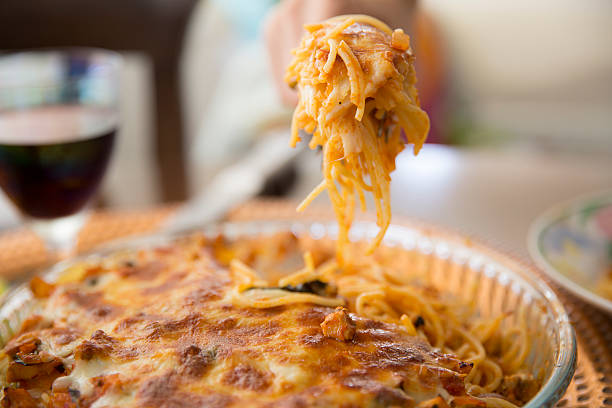

Baked Spaghetti

Description
Comforting baked spaghetti recipe with plenty of melted cheese — the perfect dish for potlucks, family
gatherings, or a weeknight dinner.
Ingredients
- 1 pound ground beef
- 1 onion, chopped
- eggs
- 1 (16 ounce) package spaghetti oil
- ½ teaspoon seasoned salt
Steps
- Preheat the oven to 350 degrees F (175 degrees C). Lightly grease a 9x13-inch baking dish.
- Bring a large pot of lightly salted water to a boil. Cook spaghetti in boiling water, stirring
occasionally, until tender but firm to the bite, about 12 minutes. Drain..
- Bake in the preheated oven for 40 minutes. Remove the foil and sprinkle with remaining mozzarella. Continue
to bake until cheese is melted and lightly browned, 20 to 25 minutes.